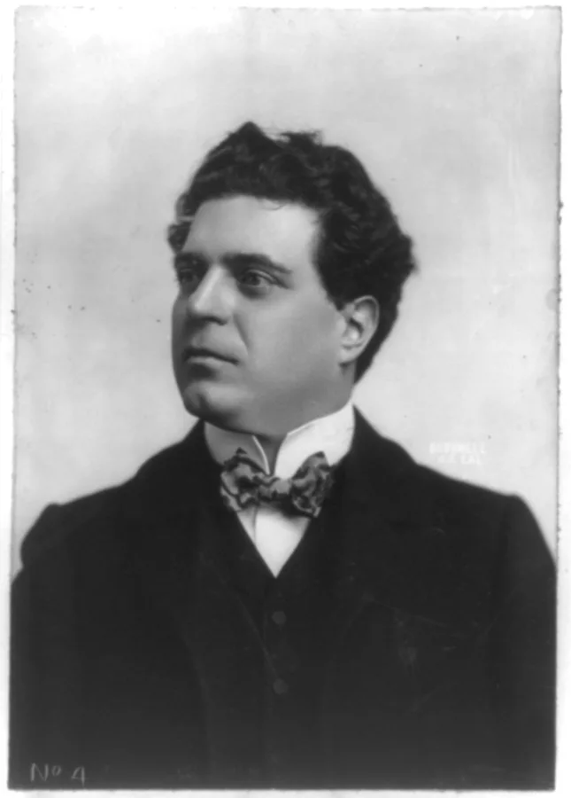

Music pioneer · Romantic · Composer arrangement studio
Pietro Mascagni
Choose the Intermezzo, then press Play. In the opera, this calm, hymn-like music is heard while the stage is empty, just before the story turns violent. Listen for the long melody that rises to a passionate climax. Playback uses sampled or synthesized instruments; consult the linked edition for fingering, bowing, pedaling, and expressive detail.
Arranging with care
A source staff is not always the melody: in an orchestral score, find the staff carrying the theme. A two-part piano study pairs your selected voice with a source bass; it is not a concert reduction and wide leaps may need redistribution. Saxophone notation is transposed while playback stays at concert pitch. Violin parts stay at concert pitch and are moved by octaves to sit above the open G string. Guitar tab preserves pitch and rhythm but may need a different octave or fingering. Original ensembles are available only where the source contains those parts. Piano reductions and original classroom studies retain their source identities.
Recordings: Nicholaus P. Brosowsky’s Tonejs-Instruments sample collection, CC BY 3.0; VSCO 2 Community Edition, CC0. Sample credits and processing.
Music pioneer · Romantic · 1863–1945
About Pietro Mascagni

Pietro Mascagni (1863–1945) was an unknown small-town music teacher when, at 26, he won a competition with a one-act opera. Cavalleria rusticana launched a new style, verismo, and its Intermezzo became one of the most-played pieces in the world.
Life and context
Mascagni was born in Livorno, Italy, on 7 December 1863, the son of a baker who wanted him to become a lawyer. He studied music in secret, then at the Milan Conservatory, where he shared lodgings with another poor young composer, Giacomo Puccini. Restless, he left without finishing and toured as a conductor of travelling operetta companies.
He settled in the small town of Cerignola, in southern Italy, as a music teacher. In 1888 the publisher Sonzogno announced a competition for one-act operas. Mascagni’s wife reportedly sent in his score after he had given up on it. Cavalleria rusticana (“Rustic Chivalry”) won, and its premiere in Rome on 17 May 1890 was a sensation, with dozens of curtain calls.
The opera belongs to verismo (“realism”): stories about ordinary people, here Sicilian villagers on Easter morning, with jealousy, honor and a fatal duel. The Intermezzo is played between the two scenes, while the stage is empty, a moment of peace before the tragedy.
Mascagni never repeated that first success, though L’amico Fritz (1891) and Iris (1898) are still performed. He became a celebrated conductor. In his last years he was closely associated with Mussolini’s Fascist government, which damaged his reputation; he died in Rome on 2 August 1945, shortly after the end of the Second World War.
Pietro Mascagni: a timeline
- Born in Livorno, Italy, on 7 December.
- Enters the Milan Conservatory; shares lodgings with Giacomo Puccini.
- Leaves to tour as an operetta conductor.
- Enters the Sonzogno one-act opera competition.
- Cavalleria rusticana premieres in Rome on 17 May.
- L’amico Fritz premieres.
- Iris premieres.
- Tours the United States as a conductor.
- Dies in Rome on 2 August.
Verismo opera and the orchestral intermezzo
Verismo (Italian for “realism”) was an opera style of the 1890s about everyday people and their strong emotions, rather than kings and gods. The music is direct and passionate, with big singable melodies.
An intermezzo is an orchestral interlude between scenes. Mascagni’s begins like a church hymn, quietly, because it is Easter morning in the village. Then the strings take up a long, soaring melody that tells us something terrible is about to happen.
Music pioneer · Romantic
Sound experiment: verismo opera and the intermezzo
Version A plays a melody softly in one octave. Version B doubles it in octaves, the way strings make a melody soar. Which version sounds more passionate?
This is an original classroom demonstration of a musical idea, not an excerpt or recording of the composer’s work.
Choose a version, then press Play.
Guided listening
Choose a performance of one of these works. Listen once for its overall character, then again for the detail in the prompt.
- Intermezzo from Cavalleria rusticana: compare the hymn-like opening with the soaring melody that follows.
- Cavalleria rusticana, “Easter Hymn”: hear the chorus and soprano sing in the village square.
- Puccini, La bohème: compare verismo-era music by Mascagni’s old roommate.
Practice and reflection
- Find where the hymn-like opening ends and the long melody begins. What changes in the score?
- Find the highest note of the melody. How does the music lead up to it?
- Think of a film scene where nothing is said but something is about to happen. What kind of music would you write for it?
Check your listening
The Intermezzo opens quietly in a chorale (hymn) texture, then a long melody rises to a passionate climax before the quiet ending. It gives the audience a calm moment before the tragedy. A useful answer names a feature you can hear and explains its effect. More than one interpretation is possible.
Use the heart | save pill to keep these notes in this browser, or copy them before leaving.